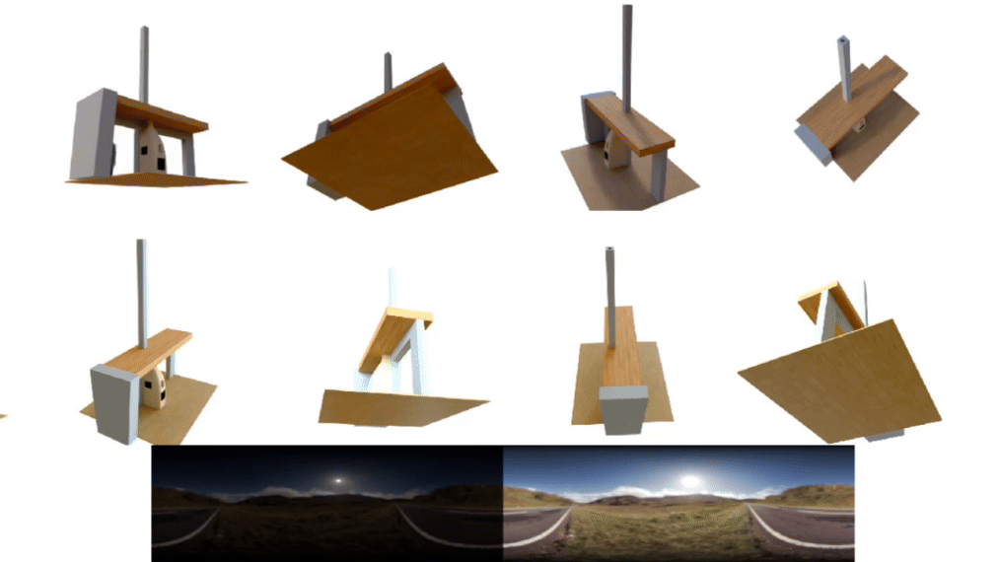
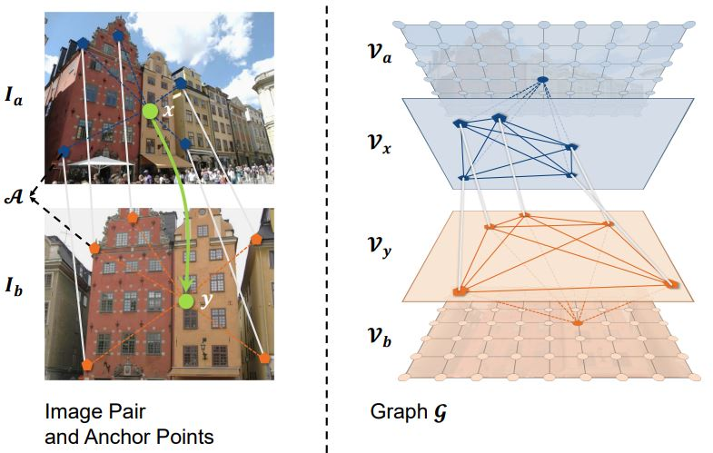

-
Buffer Anytime: Zero-Shot Video Depth and Normal from Image Priors
Zhengfei Kuang, Tianyuan Zhang, Kai Zhang, Hao Tan, Sai Bi, Yiwei Hu, Zexiang Xu, Milos Hasan, Gordon Wetzstein, Fujun Luan
arxiv 2024
-

RelitLRM: Generative Relightable Radiance for Large Reconstruction Models
Tianyuan Zhang, Zhengfei Kuang, Haian Jin, Zexiang Xu, Sai Bi, Hao Tan, He Zhang, Yiwei Hu, Milos Hasan, William T. Freeman, Kai Zhang†, Fujun Luan†
ICLR 2025
-

Collaborative Video Diffusion: Consistent Multi-video Generation with Camera Control
Zhengfei Kuang†, Shengqu Cai†, Hao He, Yinghao Xu, Hongsheng Li, Leonidas J. Guibas, Gordon Wetzstein
NeurIPS 2024
-

Stanford-ORB: A Real-World 3D Object Inverse Rendering Benchmark
Zhengfei Kuang†, Yunzhi Zhang†, Hong-Xing Yu, Samir Agarwala, Shangzhe Wu, Jiajun Wu
NeurIPS 2023 Datasets & Benchmarks Track
-
PaletteNeRF: Palette-based Appearance Editing of Neural Radiance Fields
Zhengfei Kuang, Fujun Luan, Sai Bi, Zhixin Shu, Gordon Wetzstein, Kalyan Sunkavalli
CVPR 2023
-

NeROIC: Neural Object Capture and Rendering from Online Image Collections
Zhengfei Kuang, Kyle Olszewski, Menglei Chai, Zeng Huang, Panos Achlioptas, Sergey Tulyakov
TOG (SIGGRAPH) 2022
-

DenseGAP: Graph-Structured Dense Correspondence Learning with Anchor Points
Zhengfei Kuang, Jiaman Li, Mingming He, Tong Wang, Yajie Zhao
ICPR 2022 (Oral)
-
Dynamic Facial Asset and Rig Generation from a Single Scan
Zhengfei Kuang†, Jiaman Li†, Yajie Zhao, Mingming He, Karl Bladin, Hao Li
TOG (SIGGRAPH ASIA) 2020